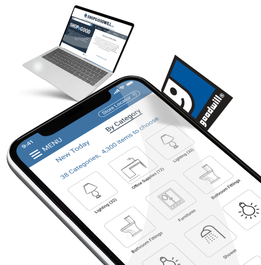
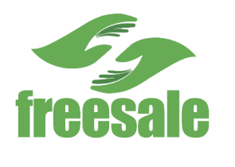

"UX is not a pallette of colors spalashed on a white canvas". It is a journey to achieve
singularity in the field of Computer Human Interaction. A quest to align both the sides of a coin - "The
Service Provider and the Consumer". It is byfar the most challenging yet exciting world where the customer
satisfaction is always the priority. Understanding the needs of a user, defining design metrics and
principles, applying Heuristic Evaluations, Accessibility compliance and most importantly to forsee
scalability while retaining a seamless User Experience across multiple devices.
Two decades of practice and the learning continues. Applying my learings to provide the best solution to every unique requirement. Driven by passion and bitten by UX!
I am Kailas Pramodh!
My Skills
UX AND RESEARCH
- User Research
- Story Boarding
- Affinity Diagram
- Empathy Map
- Personas
- Card Sorting
- Accessibility
- Usability Testing
- Whiteboarding
- Typography
- Typography
- Information Architecture
- Heuristic Evaluation
- Miro Board
INTERACTION AND DESIGN
- Miro Board
- Sticky Notes
- Pencil Sketches
- User Flow
- Low-Fed Prototypes
- High-Fed Prototypes
- A/B Testing
- Photoshop
- Illustrator
- Adobe XD
- Visio
- Invision
- Figma
- Zeplin
DEVELOPMENT AND TEST
- HTML
- CSS
- Javascript
- jQuery
- Visual Studio Code
- Usability Testing
- Accessibility Testing
- Google Analytics
- Wordpress
- Axe
- WAVE
- GitHub
My works
Project Name: U.S Department of Education
- Requirement: Analyse and provide a usablity analysis for one of the user tasks on the existing web and mobile design / share our findings and recommendations.
- Tools used: Paper, Pencil, Miro board, Sticky Notes, White board, Excel, Invision, Figma, Google drive
- Expected Deliverables:
- User Research outcomes
- Problem Statement
- Proto-Persona
- Affinity Diagram
- Empathy Map
- User Flow
- Feature Priority
- Heuristic Evaluation
- SiteMap
- Wireframes

Project Name: Goodwill.org
- Requirement:Enhance the current shopping navigtion experience by inducing LATCH principles and Improved sitemp design
- Tools used: Paper, Pencil, Miro board, Sticky Notes, White board, Excel, Invision, Figma, Google drive
- Expected Deliverables:
- User Research outcomes
- Problem Statement
- Proto-Persona
- Affinity Diagram
- Empathy Map
- User Flow
- Feature Priority
- Heuristic Evaluation
- SiteMap
- Wireframes...

Project Name: FreeSale Mobile App Development
- Requirement: New Idea Proposal to develop an app to give away items that are not of any use to the owner (Charity app)
- Tools used: Paper, Pencil, Miro board, Sticky Notes, White board, Excel, Invision, Figma, Google drive
- Expected Deliverables:
- User Research outcomes
- Problem Statement
- Proto-Persona
- Affinity Diagram
- Empathy Map
- User Flow
- Feature Priority
- Heuristic Evaluation
- SiteMap
- Wireframes
